Deportes
47 recursos de Deportes en español, sin preparación y con solucionario: fichas de lectura, búsquedas del tesoro y más, filtrables por grado.
47 recursos
Grado

«Lanzamientos con precisión» – Búsqueda del tesoro de lectura

«El gran día de atletismo escolar» – Búsqueda del tesoro de lectura

«Fútbol reglas y juego» – Búsqueda del tesoro de lectura

«Aventura en el gimnasio de escalada» – Búsqueda del tesoro de lectura

«Deslizándose sobre el hielo» – Búsqueda del tesoro de lectura

Pelota – Ficha de lectura: texto con huecos, comprensión auditiva y sopa de letras
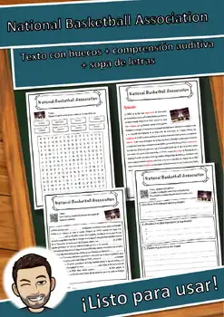
National Basketball Association – Ficha de lectura: texto con huecos, comprensión auditiva y sopa de letras
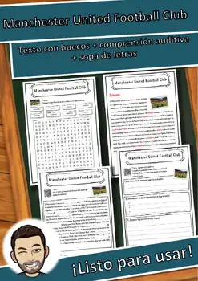
Manchester United Football Club – Ficha de lectura: texto con huecos, comprensión auditiva y sopa de letras
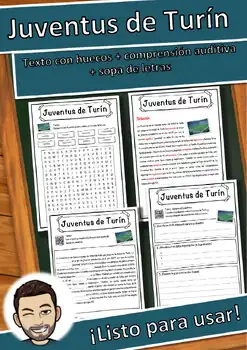
Juventus de Turín – Ficha de lectura: texto con huecos, comprensión auditiva y sopa de letras
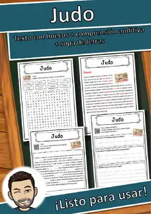
Judo – Ficha de lectura: texto con huecos, comprensión auditiva y sopa de letras
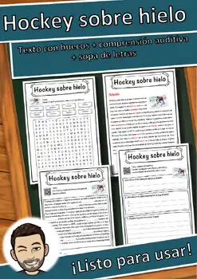
Hockey sobre hielo – Ficha de lectura: texto con huecos, comprensión auditiva y sopa de letras
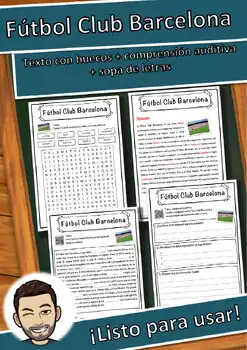
Fútbol Club Barcelona – Ficha de lectura: texto con huecos, comprensión auditiva y sopa de letras
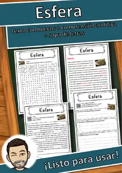
Esfera – Ficha de lectura: texto con huecos, comprensión auditiva y sopa de letras
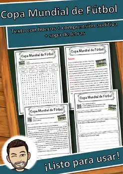
Copa Mundial de Fútbol – Ficha de lectura: texto con huecos, comprensión auditiva y sopa de letras
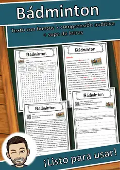
Bádminton – Ficha de lectura: texto con huecos, comprensión auditiva y sopa de letras
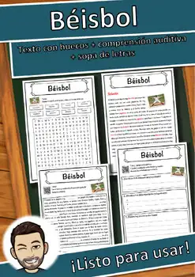
Béisbol – Ficha de lectura: texto con huecos, comprensión auditiva y sopa de letras
Bayer Leverkusen – Ficha de lectura: texto con huecos, comprensión auditiva y sopa de letras

Atletismo – Ficha de lectura: texto con huecos, comprensión auditiva y sopa de letras

Arsenal Football Club – Ficha de lectura: texto con huecos, comprensión auditiva y sopa de letras
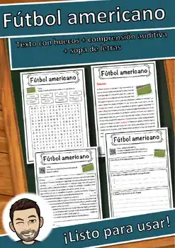
Fútbol americano – Ficha de lectura: texto con huecos, comprensión auditiva y sopa de letras
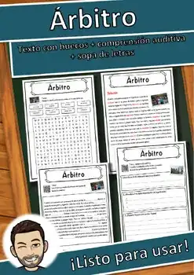
Árbitro – Ficha de lectura: texto con huecos, comprensión auditiva y sopa de letras
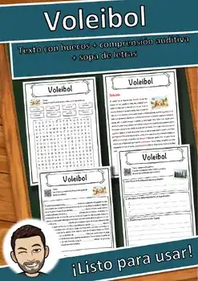
Voleibol – Ficha de lectura: texto con huecos, comprensión auditiva y sopa de letras
Tenis – Ficha de lectura: texto con huecos, comprensión auditiva y sopa de letras
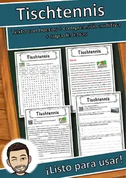
Tenis de mesa – Ficha de lectura: texto con huecos, comprensión auditiva y sopa de letras
Separación de poderes – Ficha de lectura: texto con huecos, comprensión auditiva y sopa de letras
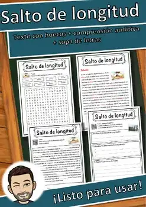
Salto de longitud – Ficha de lectura: texto con huecos, comprensión auditiva y sopa de letras
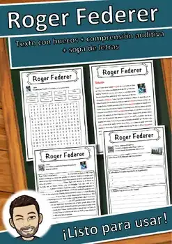
Roger Federer – Ficha de lectura: texto con huecos, comprensión auditiva y sopa de letras
Parkour – Ficha de lectura: texto con huecos, comprensión auditiva y sopa de letras
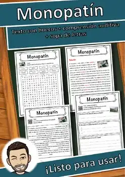
Monopatín – Ficha de lectura: texto con huecos, comprensión auditiva y sopa de letras
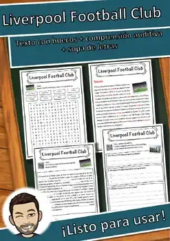
Liverpool Football Club – Ficha de lectura: texto con huecos, comprensión auditiva y sopa de letras
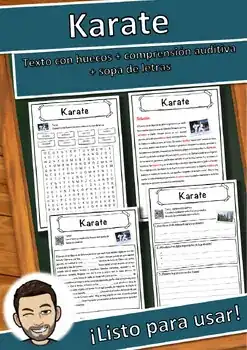
Karate – Ficha de lectura: texto con huecos, comprensión auditiva y sopa de letras
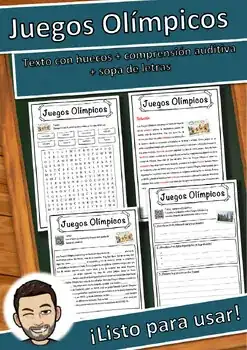
Juegos Olímpicos – Ficha de lectura: texto con huecos, comprensión auditiva y sopa de letras
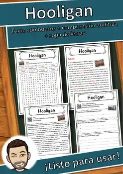
Hooligan – Ficha de lectura: texto con huecos, comprensión auditiva y sopa de letras
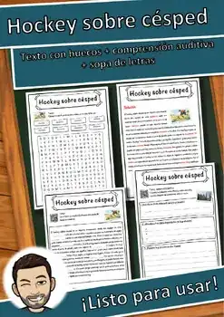
Hockey sobre césped – Ficha de lectura: texto con huecos, comprensión auditiva y sopa de letras
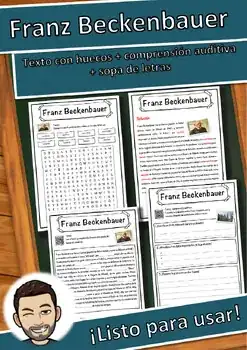
Franz Beckenbauer – Ficha de lectura: texto con huecos, comprensión auditiva y sopa de letras
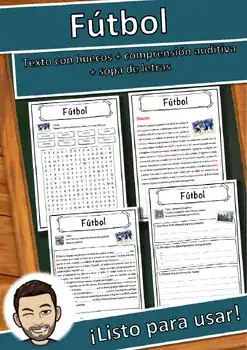
Fútbol – Ficha de lectura: texto con huecos, comprensión auditiva y sopa de letras
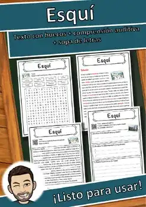
Esquí – Ficha de lectura: texto con huecos, comprensión auditiva y sopa de letras
Entrenador – Ficha de lectura: texto con huecos, comprensión auditiva y sopa de letras
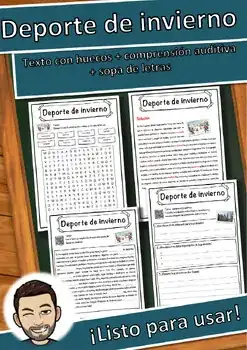
Deporte de invierno – Ficha de lectura: texto con huecos, comprensión auditiva y sopa de letras
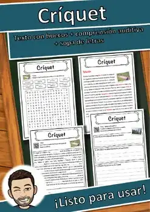
Críquet – Ficha de lectura: texto con huecos, comprensión auditiva y sopa de letras
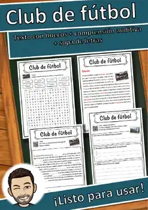
Club de fútbol – Ficha de lectura: texto con huecos, comprensión auditiva y sopa de letras
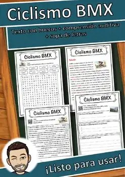
Ciclismo BMX – Ficha de lectura: texto con huecos, comprensión auditiva y sopa de letras
Ciclismo de competición – Ficha de lectura: texto con huecos, comprensión auditiva y sopa de letras
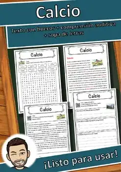
Calcio – Ficha de lectura: texto con huecos, comprensión auditiva y sopa de letras
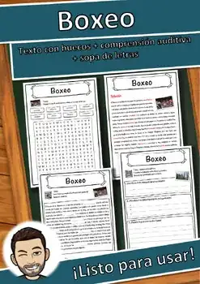
Boxeo – Ficha de lectura: texto con huecos, comprensión auditiva y sopa de letras
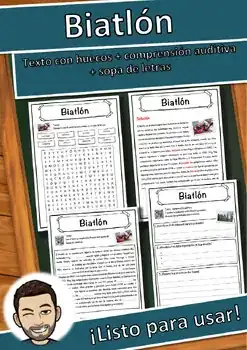
Biatlón – Ficha de lectura: texto con huecos, comprensión auditiva y sopa de letras
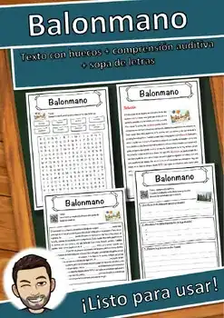
Balonmano – Ficha de lectura: texto con huecos, comprensión auditiva y sopa de letras
No se encontraron recursos. Prueba con otra palabra o con otro filtro.